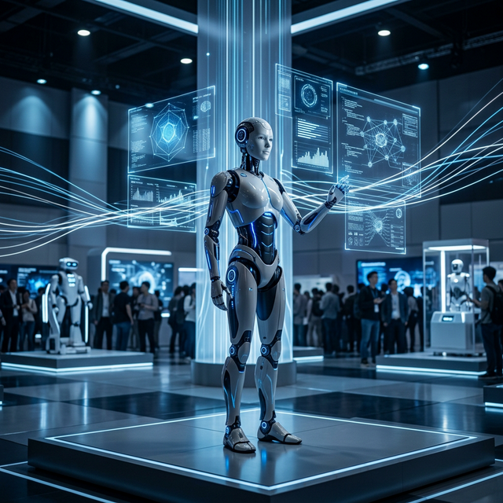

The presence of robots at MWC Barcelona 2026 was one of the most striking images of the event, especially due to the prominence of humanoids. However, focusing only on the visual aspect would mean missing the most important conclusion: robotics is being integrated as the physical extension of artificial intelligence and connected networks.
The demonstrations of humanoid robots, interaction systems and autonomous platforms showed that technology is no longer seeking solely to impress the audience. The intention is to advance towards machines capable of operating in real environments, responding to context, executing tasks and connecting with low-latency digital infrastructures.
Remote and autonomous control
One of the most interesting messages came from proposals oriented towards remote and autonomous control of robots through AI, supported by advanced communications and haptic technologies. This combination allows imagining more concrete applications in sectors such as logistics, remote supervision, maintenance, assistance and industrial automation.
Robotics as part of the connected ecosystem
What is relevant about MWC 2026 is that it presented robotics as part of the connected ecosystem. The robot is no longer an isolated system and becomes dependent on infrastructure that includes connectivity, edge computing, intelligent processing and real-time response.
For businesses and cities, this opens an interesting scenario. Automation is no longer limited to software that processes data in the background, but begins to materialise in physical devices that can move, observe, act and interact with people and spaces. That was one of the great signals from Barcelona: AI is beginning to take physical form.
Sources
MWC 2026 opening coverage featuring humanoid robots and AI demos.
NTT Group: technologies for remote and autonomous robot control at MWC Barcelona 2026.